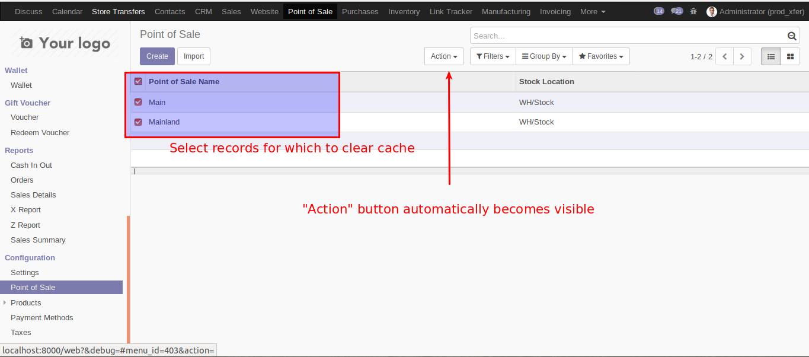
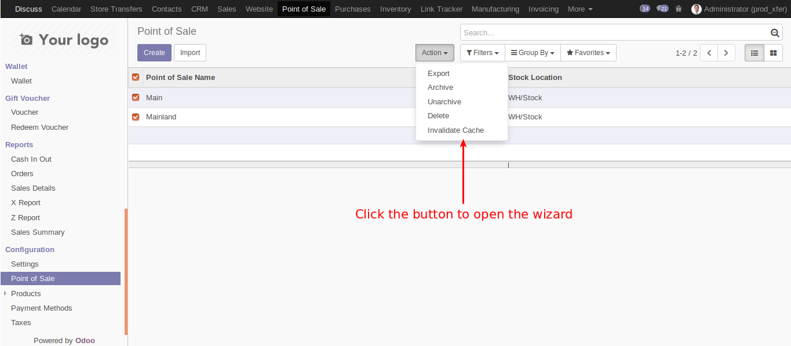
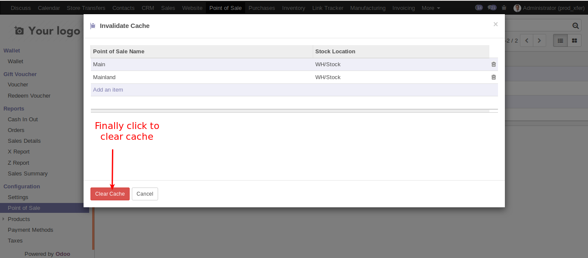

You can navigate to the PoS configuration tree view from Point of Sale >> Configuration >> Point of Sale
This will display all the pos configurations in tree view. Select one or more records by clicking on the checkbox in front of each record. By this time the action button at the top becomes visible. On the drop down menu you should see a menu called "Invalidate Cache".
Select one or more records by clicking on the checkbox in front of each record. By this time the action button at the top becomes visible. On the dropdown you should see a menu called Invalidate Cache.
Check records to operate on
Click on the Invalidate Cache button and you should see a wizard open up with all the records selected in tree view.
Click on Clear Cache button to clear cache
